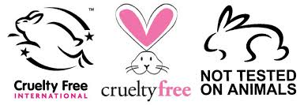

Mamy XXI wiek, lecz tak! Są przedsiębiorstwa, które testują swoje produkty na zwierzętach, popimo tego, iż istnieją technologie, które pozwalają na wykluczenie tego okrucieństwa. Poznaj działania marek, które mają gdzieś naszą planetę, a ich motywem przewodnim jest zysk za wszelką ceną a przy tym wmawiają Ci, że człowiek jest tego warty. Ale czy chcesz być tego warty/a? Poszerz swoją wiedzę i zdecyduj sam/a!

As long as men massacre animals, they will kill each other. Indeed, he who sows the seeds of murder and pain cannot reap the joy of love.
The greatness of nation and its moral progress can be judged by the way its animals are treated.
Our task must be to free ourselves from this prison by widening our circle of comppasion to embrance all living creatures and the whole nature in its beauty.
Testy produktów kosmetycznych na zwierzętach to wierzchołek góry lodowej. Jednakże jest to najlepszy start w procesie uświadamiania sobie jak bardzo zwierzęta są wykorzystywane na naszej planecie oraz jaki ma to wpływ na środowisko, a także na nas samych mentalnie i duchowo.
Zapraszam do dalszej drogi i zapoznania się z kolejnymi tematami.